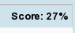
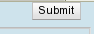

at the bottom of the Tutor pane.
at the bottom of the Tutor pane.
Andes is a tool for solving physics homework problems. When solving a problem, you write your entire solution in the drawing area, using tools in the Toolbar on the left. As you complete each step of the solution, your entry will turn red if it is incorrect or green if it is correct.
If you are stuck or unsure why an entry is incorrect, you can
ask the Andes Tutor for Help. Just click on the help button
at the bottom of the Tutor pane.
If you have a comment or complaint, type it in the text box
 at the bottom of the Tutor pane. These are logged and will
be read by us later.
at the bottom of the Tutor pane. These are logged and will
be read by us later.
Your score  is shown on the top of the Tutor pane. It is based on the number of correct solution steps, with a penalty for the number of incorrect steps attempted and the number of "bottom-out" hints received.
When you have completed a problem, click on the  button to exit.